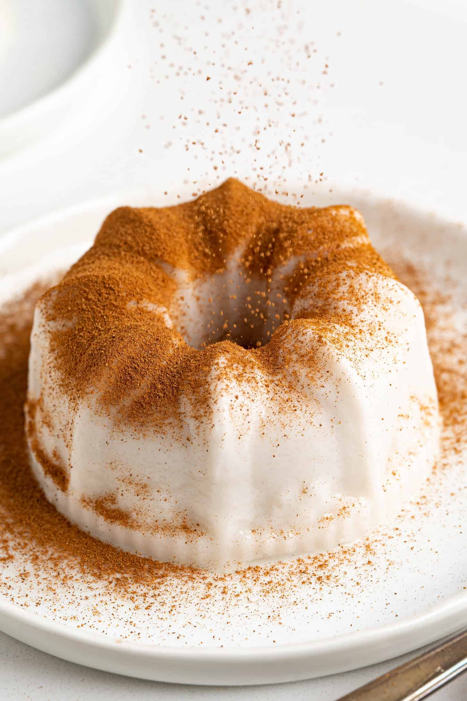

Tembleque
Ingredientes
- 2 tazas de leche de coco
- 1/2 taza de maicena
- 3/4 taza de azúcar
- 1 rama de canela
- 1 pizca de sal
- Canela en polvo para decorar
- Coco rallado (opcional)
Preparación
- En una olla, calienta la leche de coco con azúcar, sal y la rama de canela.
- Disuelve la maicena en un poco de leche de coco fría y añádela a la mezcla.
- Cocina a fuego medio, removiendo constantemente hasta que espese.
- Vierte en moldes individuales, deja enfriar a temperatura ambiente y luego refrigera 2 horas.
- Desmolda y espolvorea con canela en polvo y coco rallado antes de servir.